🎯 عن هذا المقرر
ما علم الجيولوجيا؟
الجيولوجيا (Géologie) هي علم الأرض: تدرس الأرض من حيث تكوينها الداخلي وموادّها الفلزية والصخرية، والقوى المؤثرة فيها عبر الزمن (الفعل الجيولوجي الداخلي والخارجي)، وتاريخ تطوّرها، والظواهر المرتبطة بها كالزلازل والبراكين.
مجالاتها الرئيسية
- الجيولوجيا الداخلية (البنية): تركيب الأرض الداخلي، الانفعالات التكتونية، الطيات والفوالق.
- الجيولوجيا الخارجية: التجوية، التعرية، النقل والترسيب، وتشكيل المظاهر الأرضية.
- جيولوجيا المواد: الفلزات والصخور وأنواعها ودورتها.
- الجيولوجيا التاريخية: تعاقب الأزمنة الجيولوجية وتواريخ الصخور والمستحاثات.
- الفروع التطبيقية: الكارطوغرافية الجيولوجية، الجيوفيزياء، الهيدروجيولوجيا، جيولوجيا المناجم والبترول.
الأرض في المجموعة الشمسية
عندما نشاهد الأرض من مكان بعيد نلاحظ أنها جسم صغير متحرك في الفضاء بين عدد هائل من الأجرام السماوية. حجمها ضئيل جداً مقارنة بالشمس، لكنها تتميّز عن بقية كواكب المجموعة الشمسية الثمانية بجملة من الخصائص التي جعلت منها الكوكب الوحيد المعروف الصالح للحياة حتى اليوم: المسافة المناسبة عن الشمس، وجود الغلاف الغازي والغلاف المائي، والحرارة المعتدلة.
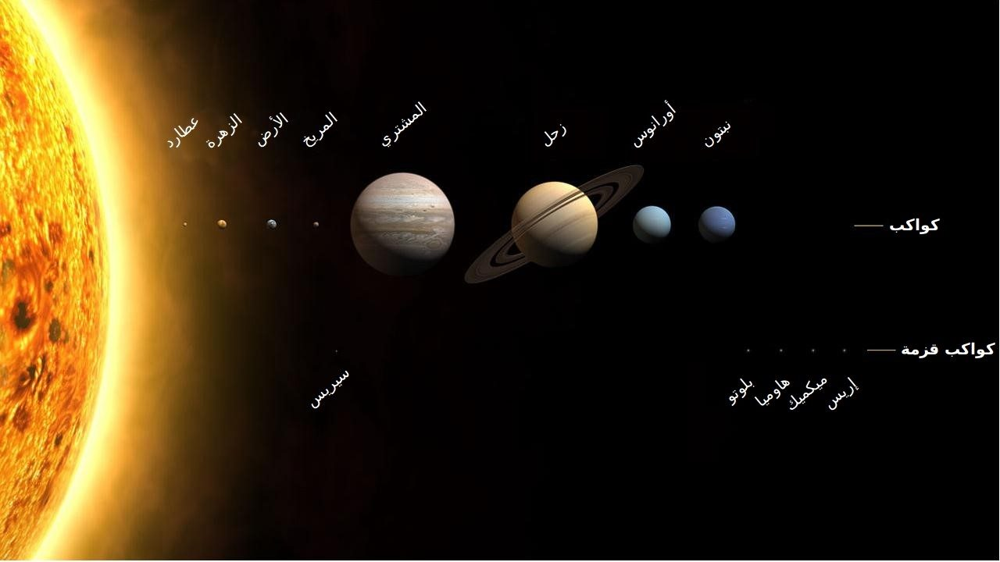
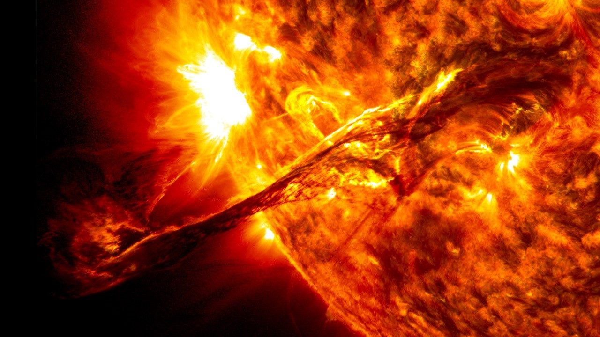
1) شكل الأرض وأبعادها
الأرض جسم كروي مسطّح قليلاً عند القطبين (جيويد الشكل): نصف قطرها عند خط الاستواء أكبر منه عند القطبين، ولذلك تُقاس الصفة بـ«تسطح» مقداره ≈ 1/298 (0,00335).
2) حركة الأرض
- الحركة الذاتية (حول محورها): دورة واحدة كل 24 سا تقريباً، من الغرب نحو الشرق؛ ناتجها تعاقب الليل والنهار.
- الحركة السنوية (حول الشمس): في مدار إهليجي «بيضوي» تتمه في 365,25 يوماً؛ مع ميل المحور ≈ 23°27' ينتج تعاقب الفصول والتوزيع الحراري.
3) الجاذبية الأرضية
قوة جذب الأرض للأجسام نحو مركزها، وتتغيّر قيمتها بتغيّر خطوط العرض والارتفاع. هي المسؤولة عن تماسك الغلاف الغازي والمائي حول الأرض، وعن الآليات الخارجية: انحدار الأمطار والجريان السطحي والانهيارات الأرضية.
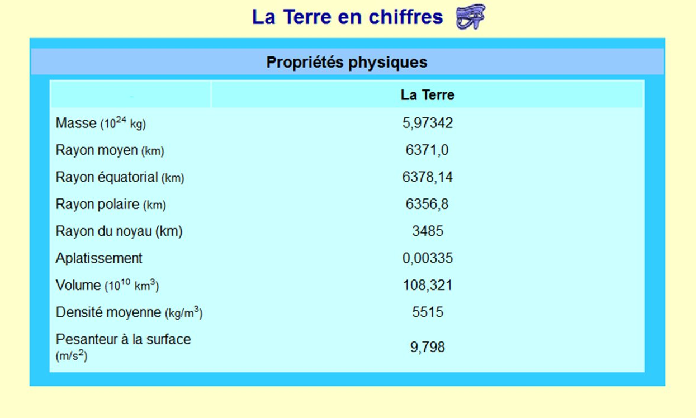
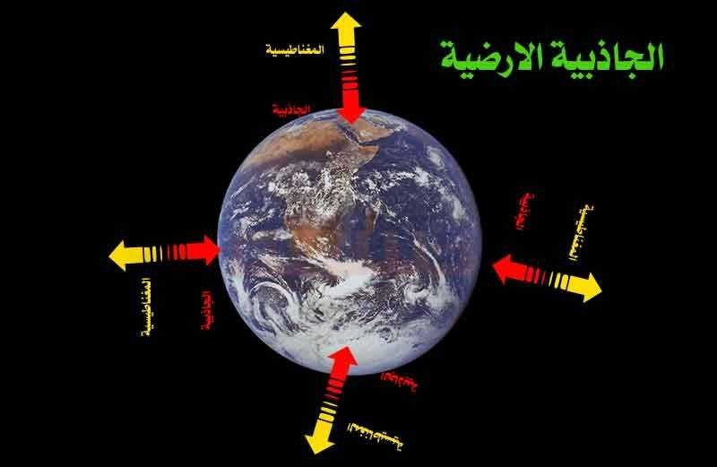
4) حرارة الأرض الداخلية
الحرارة الداخلية ترجع أساساً إلى تحلل العناصر المشعّة (الأورانيوم، الثوريوم، البوتاسيوم 40) إضافة إلى الحرارة البدائية المتبقية من التكوين. يبلغ التدرج الحراري الجيولوجي ≈ 3°م كل 100 م في الطبقات العليا، وهو محرّك الانجرافات الحملانية في الوشاح والظواهر البركانية.
1) كيف ندرس داخل الأرض؟
- الطرق المباشرة: الآبار الجيولوجية العميقة (آبار التنقيب عن البترول، بئر كولا الروسية ≈ 12 كلم) — لا تتجاوز أقرب طبقات القشرة.
- الجيوفيزياء (طرق غير مباشرة): تسجيل الموجات الزلزالية الطبيعية والاصطناعية وتحليل انكسارها وانعكاسها عبر الأوساط (الاستكشاف السيزمي البرّي Onshore والبحري Offshore).
- النيازك: تحليل تركيبها يعطي نموذجاً عن التركيب الداخلي العام للأرض.
2) الطبقات الثلاث
| الطبقة | العمق (كلم) | الحدود | الكثافة | الخصائص |
|---|---|---|---|---|
| القشرة الأرضية | 30–70 قارّية 5–10 محيطية | حتى موهو (Mohorovicić) | 2,7 – 3,3 | قارية سميكة فاتحة (سيال)، محيطية رقيقة كثيفة (سيما) |
| الوشاح (الستار) | 30 → 2900 | حتى غوتنبرغ (Gutenberg) | 3,3 → 5,7 | أوليفين/بيروكسين — علوي (ليتوسفير + أسثينوسفير لدن) وسفلي |
| النواة (اللب) | 2900 → 6371 | حتى المركز — حد ليمان (Lehmann) عند ±5150 | 10 → 13+ | حديد + نيكل: خارجي سائل (مصدر المغناطيسية) وداخلي صلب |
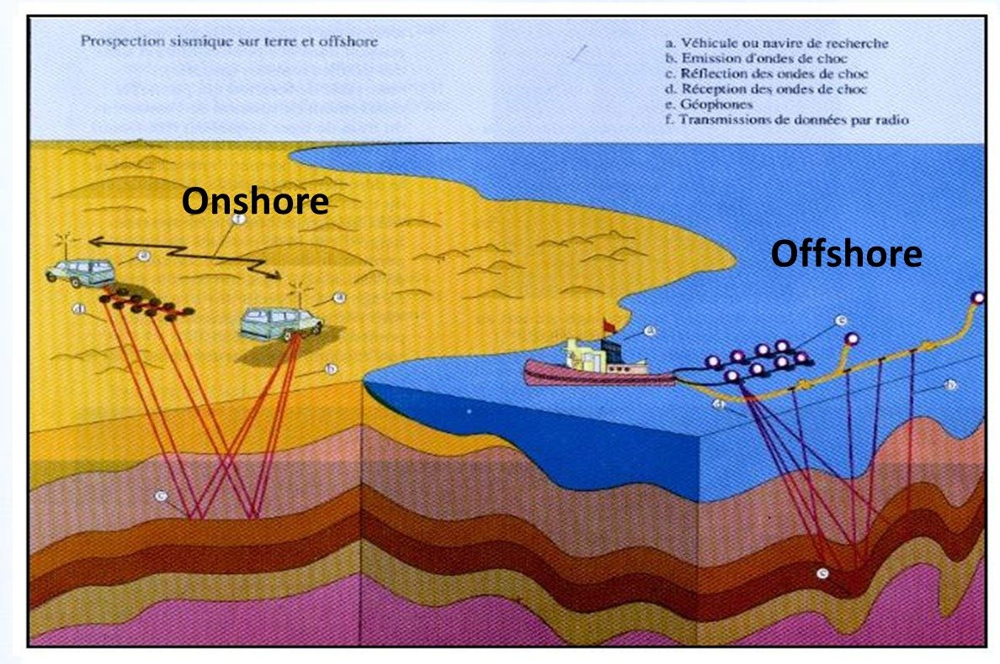
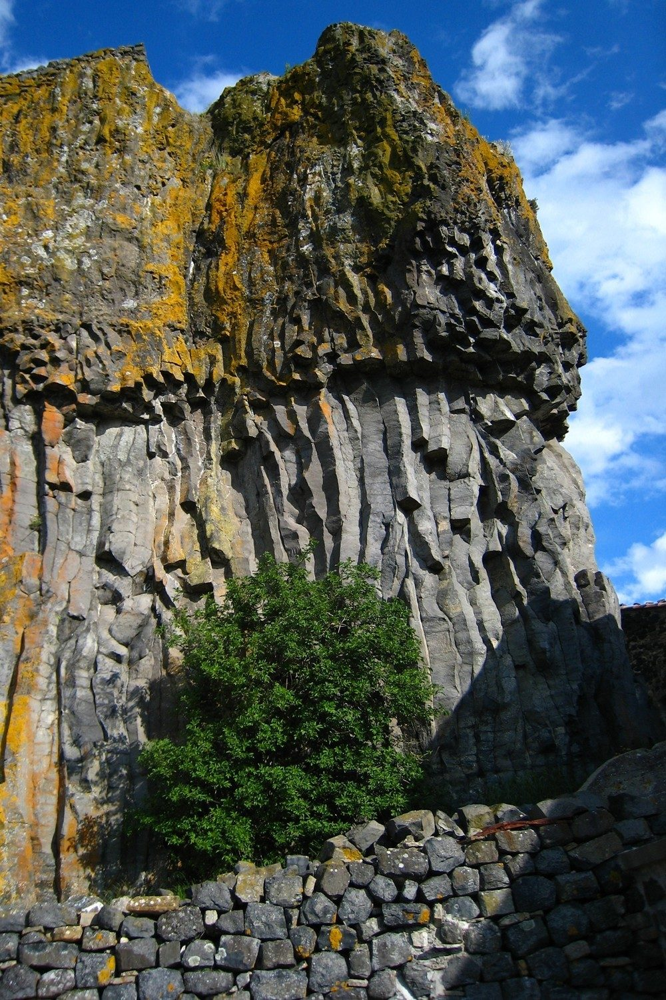
1) الفلز (المعدن)
الفلز مادة طبيعية متجانسة، متبلرة القاعدة، ذات تركيب كيميائي خاص وبنية ذرية منتظمة. تُعرَّف الفلزات بخصائصها الفيزيائية:
| الخاصية | التعريف | أمثلة |
|---|---|---|
| الصلادة | مقاومة الخدش — مقياس موس من 1 إلى 10 | التلك 1 … الكوارتز 7 … الألماس 10 |
| اللون والخط | اللون الظاهر، ولون بوردة المعدن (الأثبت) | الهيماتيت: خط أحمر بني |
| البريق | معدني / غير معدني (زجاجي، حريري، ترابي…) | الذهب معدني، الكوارتز زجاجي |
| الانفصام / الانكسرام | تشقق منتظم في جهات مفضلة / غير منتظم | الميكا انفصام تام في وجه واحد |
| الكثافة والمغناطيسية | الوزن النوعي، الجذب المغناطيسي، التوصيل | المغنيتيت مغناطيسي طبيعي |
2) الصخور وأنواعها الثلاثة
- الصخور النارية (الصهارية): تتصلّب من الصهارة. بلوتونية (جوافرية): تصلّب بطيء عميقاً → بلورات مرئية خشنة (غرانيت، غابرو). بركانية: تصلّب سريع سطحاً → نسيج دقيق/زجاجي (بازلت، ريوليت).
- الصخور الرسوبية: تتشكّل عبر التجوية ← النقل ← الترسيب ← التصلّب (الإسمنتة). تتميّز بـالتطبق والمستحاثات: رملي، غرين، كلسي، ملفوظات (بريشيا، كونغلوميرا).
- الصخور المتحولة: إعادة تبلور صخور سابقة تحت فعل الضغط والحرارة (التحول الاتصالي/الجهوي): غرانيت → نَيْس، حجر الكلس → رخام، صخر الطفل → لوح (شيست).
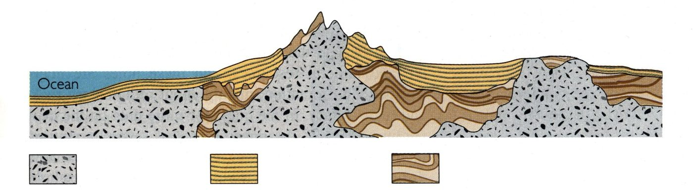
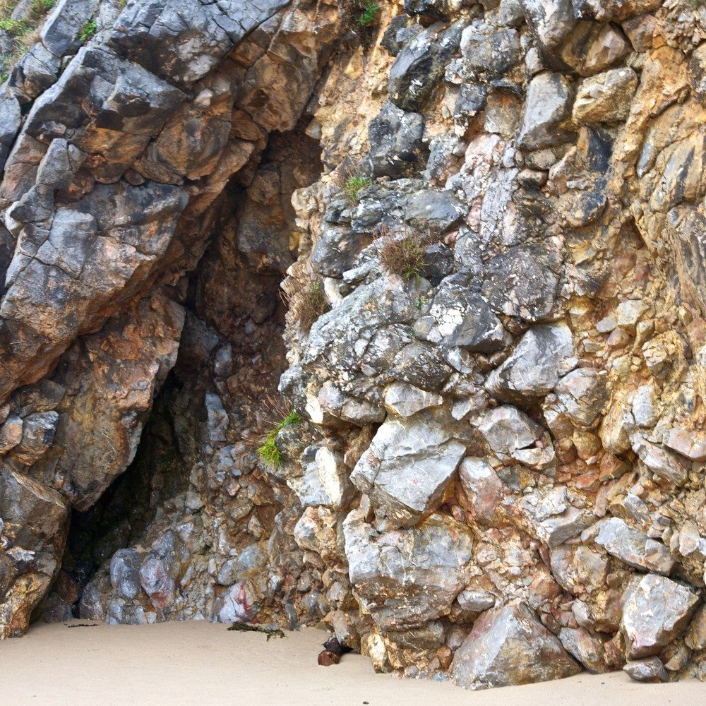
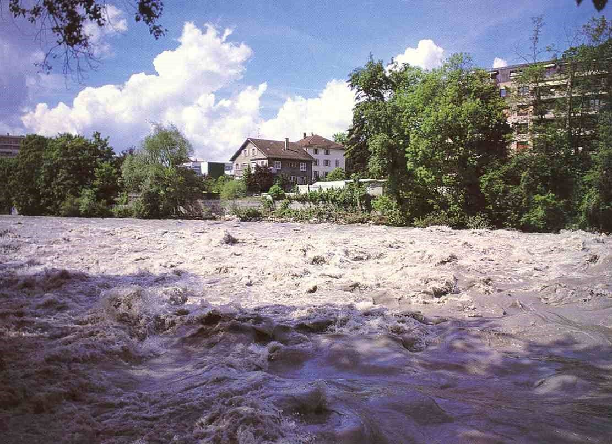
3) دورة الصخور
الناري ← (تجوية وترسيب) ← الرسوبي ← (تحول) ← المتحول ← (انصهار) ← صهارة ← ناري… دورة مستمرة عبر الملايين من السنين تشيّد وتفكّك مواد القشرة باستمرار.
1) التجوية (تفكيك الصخور في مكانها)
- فيزيائية (ميكانيكية): تمدّد وانقباض حراري (التفلكن في الصحاري)، التجمّد Breakage بالجليد، تبلور الأملاح في المسام، جذور النبات.
- كيميائية: تحلل مائي، إذابة (الكارست في الأحجار الكلسية)، أكسدة (تصدّأ المعادن الحديدية)، كربنة، هيدروليات.
2) التعرية (حمل النواتج)
- مائية-نهرية: حتّ عمودي في المنبع (تعميق الوادي)، حتّ عرضي أفقي في المجرى (توسيع الوادي وتشكيل الجانبي)، وحتّ رجعي نحو المنبع.
- ريحية: تجريف (متانة/انكماش) وكشط بالرمال المنقولة.
- جليدية: كشط بقيع الأنهار الجليدية (أخاديد U، سيركات، بحيرات).
- بحرية-ساحلية: ضرب الأمواج → جروف (falaises) ورصف كاشط.
3) النقل والترسيب
تتنقّل المفكّكات والذوائب بأشكال ثلاثة: تدحرجة (جرّ القاع)، عالِقة (رواسب معلّقة بالدوامات)، مذابة (محلول كيميائي). وعند كل نقصان في الطاقة يحدث الترسيب: سهول فيضية، دلتاوات، مراوح طميية، كثبان رملية، مواضع جليدية.
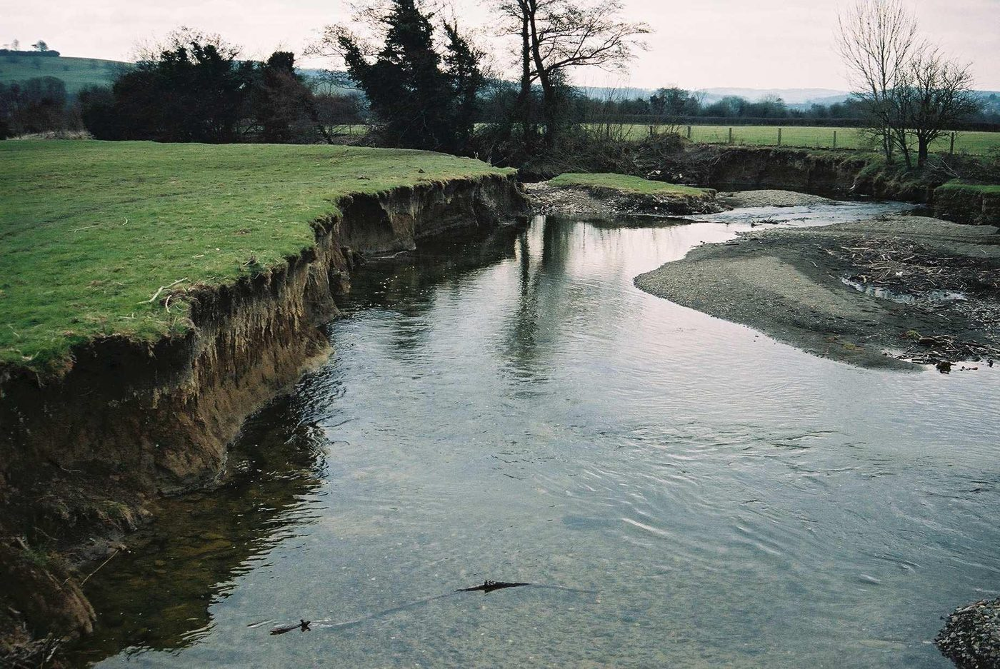
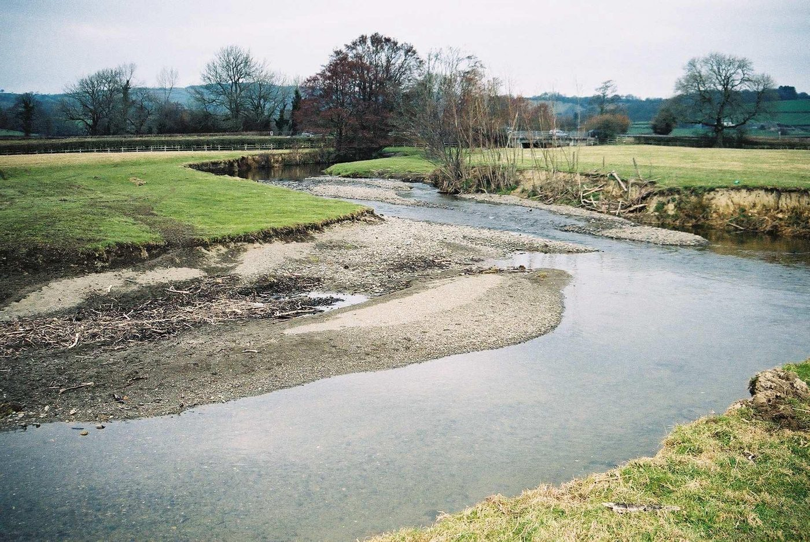
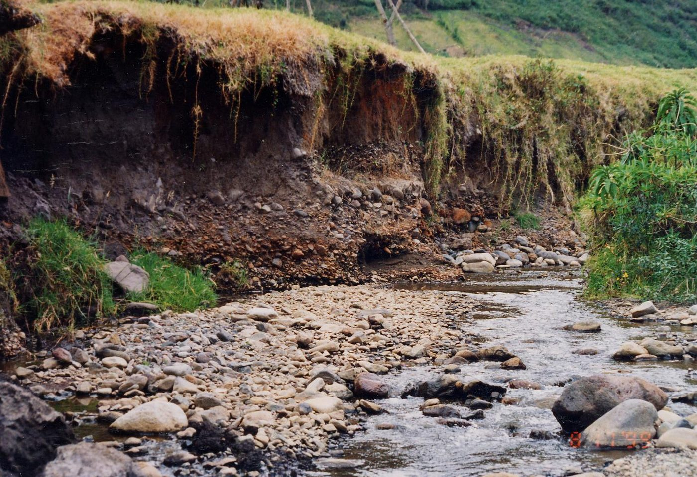
1) التطبق (الترسيب الأفقي)
تتراكب الرواسب في طبقات أفقية مبدئيّاً (المبدأ الأفقي — ستينو)، وكل طبقة أحدث من التي تعلوها وتقدم من التي تحتها (مبدأ التراكب) — القاعدة الأولى للتاريخ الجيولوجي النسبي. عندما نرى طبقات مائلة/مقلوبة نعلم أن حدثاً تكتونيّاً أثّر فيها بعد ترسيبها.
2) أنواع التشوهات
| النوع | السلوك | النتيجة البنائية |
|---|---|---|
| المرنة (Élastique) | تشوه مؤقت يزول بزوال الإجهاد | لا أثر بنائي دائم |
| اللدنة (Plastique) | انبطاط دائم بدون تشقّق (عمق + حرارة) | الطيات |
| الهشة (Fragile) | كسر وفقدان الاستمرارية (سطحية باردة) | الفوالق والشقوق |
3) الطيات (Plis)
انحناء الطبقات الصخرية تحت إجهاد ضاغط. عناصرها: المحور (خط أعلى الانحناء)، المستوى المحوري، الجناحان، المفصل. تشيّد الطيات السلاسل الجبلية الالتوائية مثل جبال الأطلس وجبال الألب.
- طية ركبية (مفتوحة): انحناء لطيف جناحاها متباعدين.
- طية منحرقة: جناحاها متقاربان محورها مائل.
- طية مستقيمة (محورية): مستوى محوري قائم، جناحان متماثلان.
- طية راقدة: نفس عمرية الجناحين شبه أفقيان (إجهاد شديد).
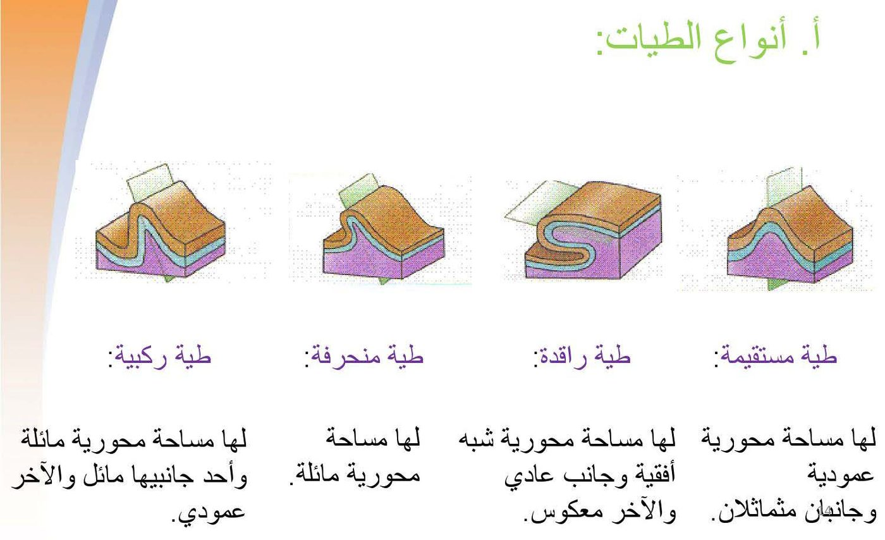
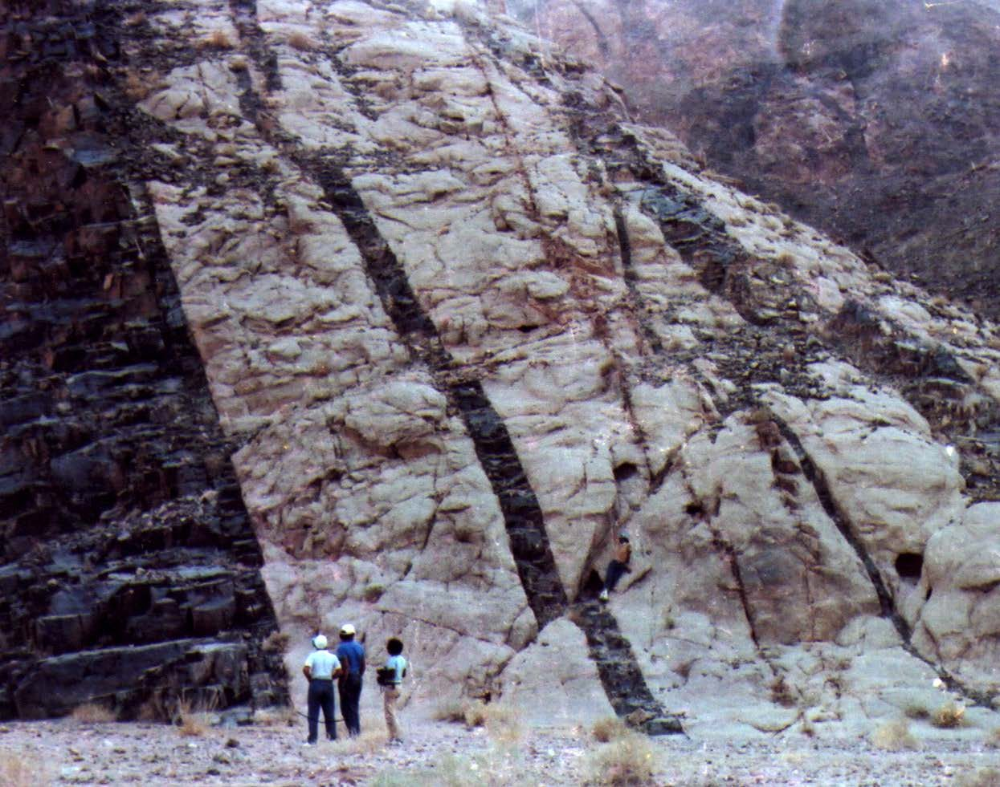
4) الفوالق (Failles)
كسر في الصخور يعقبه انزياح كتلتين على جانبيه. نميّز: مستوى الصدع (ميله dip)، الرمية (الانزياح العمودي الظاهر)، الجدار المعلق (فوق المستوى) والجدار القائم (تحته).
- صدع عادي: المعلق هابط — إجهاد شدّي (تباعد القشرة، الأخاديد الأفريقية العظيمة).
- صدع مقلوب: المعلق صاعد — إجهاد ضاغط (الجبال الالتوائية والانثنائات الانقلابية).
- صدع انزلاقي أفقي (Decrochement): انزياح جانبي تام للكتلتين أفقياً (سان أندرياس) — حدود تحويلية للصفائح.
- تراكيب مرتبطة: هورست (كتلة مرفوعة) وغرابن (حوض منخفض) بين صدعين متقابلين.
1) ما الزلزال؟
اهتزاز مفاجئ لسطح الأرض ينشر طاقة ميكانيكية عبر باطنها. يتولد من انكسار صخري (فوالق نشطة)، ثوران بركاني، انهيارات، أو نشاط بشري (متفجرات، خزانات سدية). المصطلحات الأساسية: البؤرة (Focus/Hypocentre) مكان البدء في العمق، المركز السطحي (Épicentre) عموديتها على السطح — منطقة أقصى الأضرار عادة.
2) الموجات الزلزالية
| الموجة | النوع | الوسط المتاح | الخصائص |
|---|---|---|---|
| P — ضاغطة | داخلية، طولية (تموج ضغط) | صلب + سائل + غاز | الأسرع تصل أولاً |
| S — قصّية | داخلية، مستعرضة | الصلب فقط! | بطيئة، تدمّر باهتزاز جانبي — توقفها في اللب السائل دلّ على سيولته |
| L — سطحية | سطحية (رف/ريلاي) | القشرة فقط | الأكثر تدميراً للمنشآت |
3) القياس والرصد
- السيزموغراف: يسجّل وصول الموجات؛ الفارق الزمني بين P وS يحدّد بعدَ البؤرة.
- سلم ريختر / المغناطيسية (Mw): القوة المنبعثة — مفتوح لوغاريتمي (كل درجة ×30 طاقة).
- سلم مركاتلي المعدّل: الشدة الظاهرة من الآثار (I → XII).
4) التوزيع العالمي والوقاية
تتركّز الزلازل في أحزمة حدود الصفائح: حزام المحيط الهادئ (حزام النار)، الحزام الألبي-الهملاياي، وسلاسل الظهر المحيطية. الجزائر ضمن الحزام الألبي (زلازل العاصمة/بومرداس 2003، الشلف 1980). الوقاية: تقنين البناء الزلزالي (RPA)، دراسة الفوالق النشطة، حساسية الوسطاء، خطط الإعلام والإخلاء.
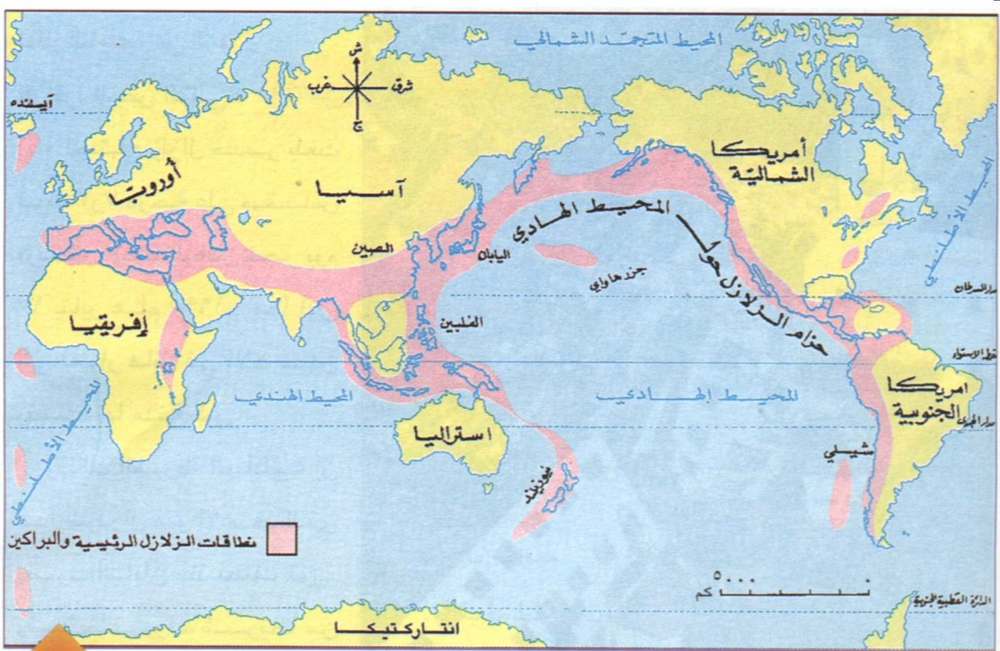
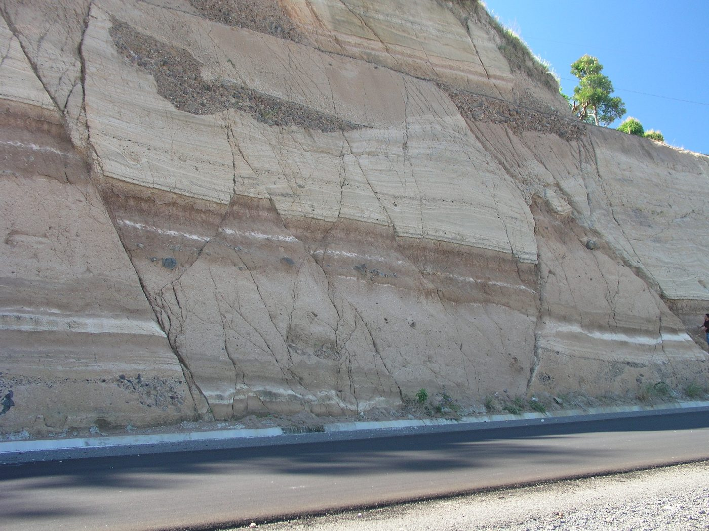
1) ما البركان؟
ثوران مواد منصهرة (الصهارة/Magma) من باطن الأرض إلى السطح عبر شقوق الأرض، مصحوباً غالباً بغازات وغلاظات صلبة. بعد التصلب تصبح تلك المواد حمماً (Lave) ورواسم بركانية تكوّن مخروطاً.
2) بنية البركان النموذجية
- الغرفة الصهارية: مستودع الصهارة في العمق (بضع كلم).
- المدخنة/القناة البركانية: ممر الصعود.
- الفوهة والحفرة: الفوهة عند القمة، والحفرة الكبيرة (Caldeira) تتشكل بالانهيار بعد ثوريانات عنيفة.
- المخروط البركاني: تراكم الأصطلاء والجارّة عبر عصور الثوريانات.
3) مصادر الصهارة والتوزيع
تتولد الصهارة في ثلاثة سياقات تكتونية كبرى: مناطق الانفتاح القاري والمحيطي (سلاسل الظهر المحيطية — تذويج ناقص الضغط)، مناطق الاندساس (الصفائح الغائرة تبخّر الوشاح فوقها — أرخبيلات نارية)، والنقاط الساخنة (أعمدة وشاحية — هاواي).
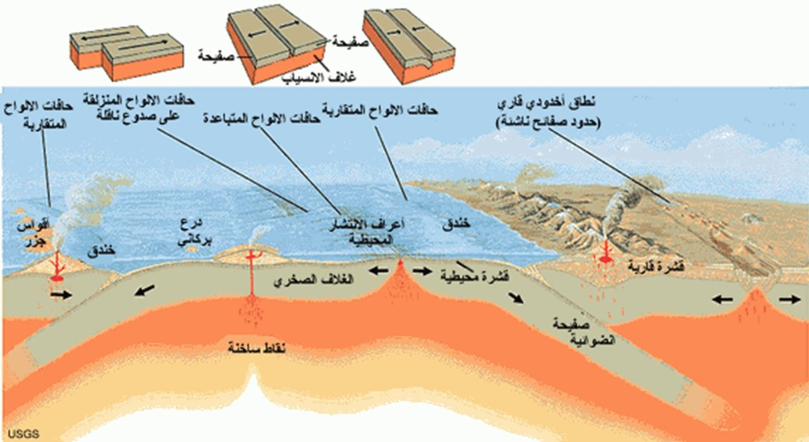
4) أنواع الثوران
| النمط | الصهارة | الشكل | الأمثلة |
|---|---|---|---|
| الهاواي | بازلتية سائلة قليلة الغاز | تدفق حمم واسع — مخروط درعي لطيف | كيلاويا (هاواي) |
| سترومبولي | متوسطة اللزوجة | قذائف دورية — شواظ | سترومبولي (إيطاليا) |
| فولكاني / بليني | لزجة غنية بالغاز | انفجاري مدمر: عمود رماد، سحابة تدفق نارية، لاهار | فيزوف، بيناتوبو، سانت هيلين |
5) المنتجات والمخاطر والفوائد
المنتجات: حمم متصلبة، رماد وتُفرة (Téphra)، بومزول وخبث، لاهار (طين بركاني مع المياه)، غازات (H₂O, CO₂, SO₂…). المخاطر: تدمير مباشر، حرائق، تسونامي (كراكاتوا)، تغيير مناخي قصير (شتاء بركاني). الفوائد: تربة خصبة، طاقة حرارية-جوفية، سياحة، معادن. براكين الجزائر كلها خامدة (رسوم الأطلس والهقار) لكنها تشهد على نشاط قديم.
1) الفرضية: من فكرة إلى نظرية
في 1912 قدّم العالم الألماني ألفريد فيغنر فرضية «زحزحة القارات»: كانت القارات متحدة في قارة عظمى واحدة هي بانجيا (Pangée) ثم انشطرت وتباعدت قطعها عبر ملايين السنين. رُفضت الفرضية زمناً لعدم قدرته على شرح «الآلية المحرّكة»، ثم ظهرت في الستينات نظرية تكتونية الألواح التي أكدت وجود الحركة وتفسّر آلياتها.
2) أدلة زحزحة القارات
- تطابق السواحل: انطباق شكلي بين افريقيا وأمريكا الجنوبية كقطعتي بازل.
- الحفريات: نفس الأنواع (ميزوصورس المائي، غلوسوبتيريس النباتي) على طرفي محيطات واسعة.
- الصخور والسلاسل: استمرارية الأنظمة الجبلية القديمة (كاليدونية/هيرسينية) بين قارات متباعدة.
- المناخات القديمة: آثار جليدية في مناطق استوائية حالياً (السحب الجليدي الباليومي).
- الأدلة الحديثة: توسّع قاع المحيط (هس)، المغناطيسية الباقية المعكوسة بالتناوب على جانبي الظهر، وتصاعد عمر الرواسب كلما ابتعدنا عن الظهر.
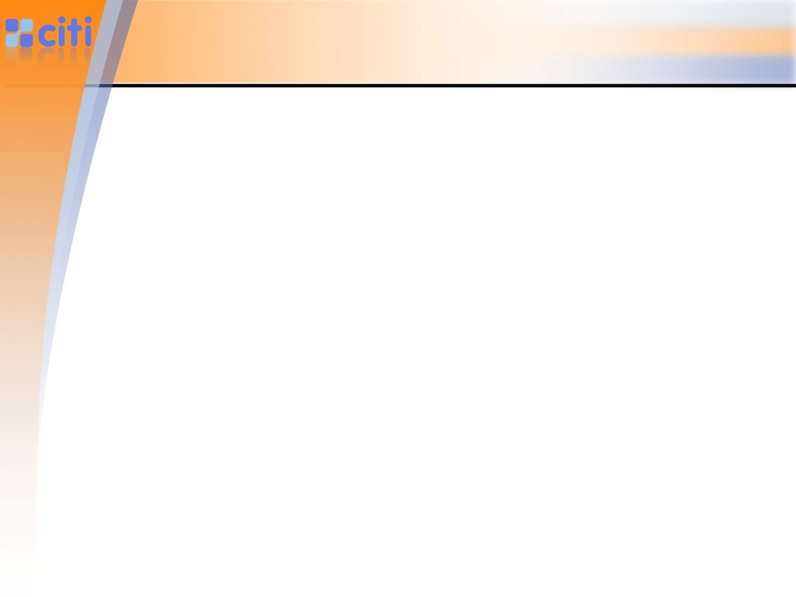
3) 📷 براهين فيغنر مصوّرة — الأدلة الخمسة
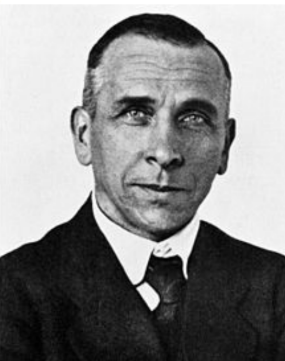
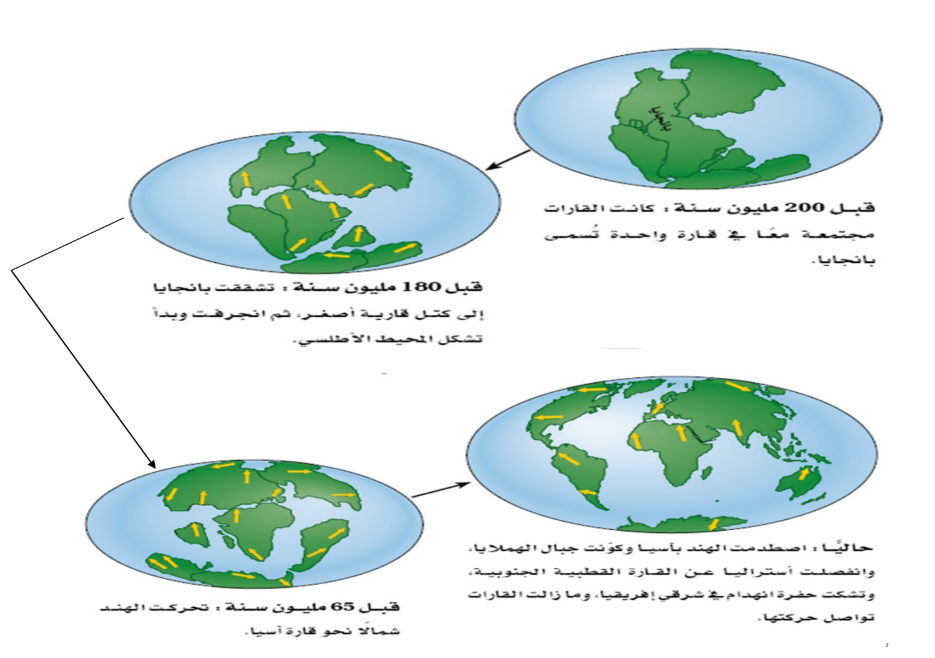
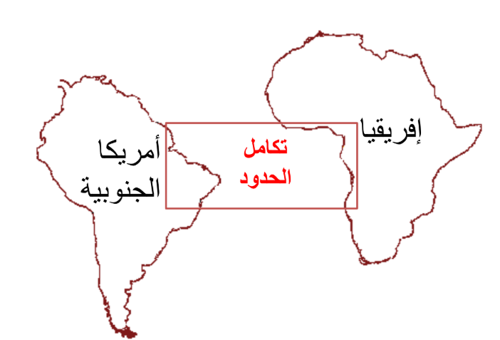
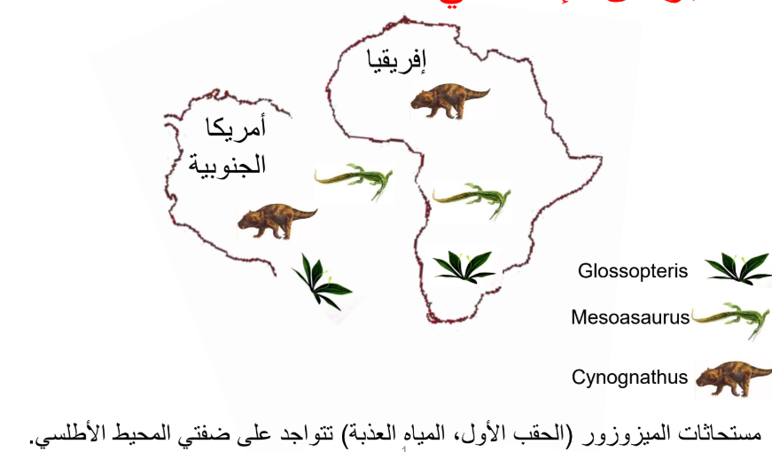
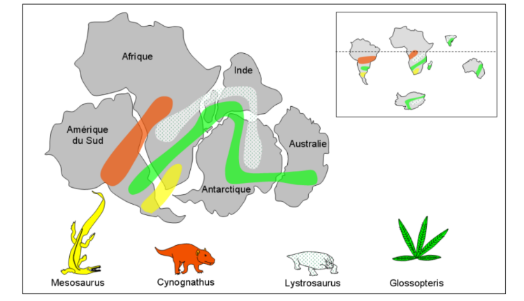
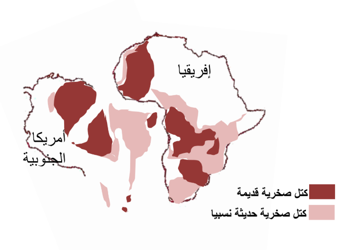
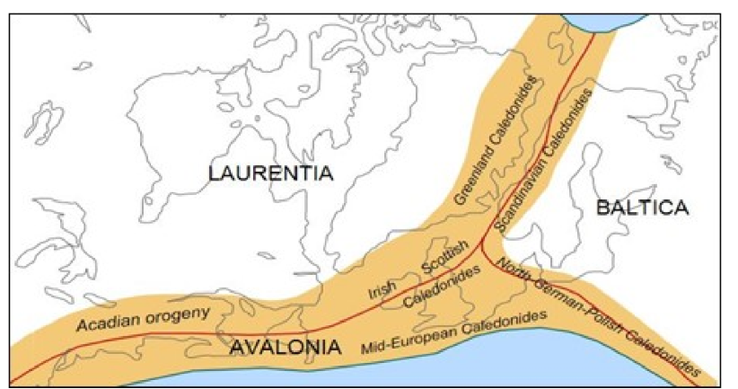
4) ⚠️ لماذا رُفضت الفرضية؟ (الدلائل التي أسقطتها في وقتها)
واجهت فرضية الانجراف القاري مشكلتين رئيستين حالتا دون قبولها:
- أولاً — القوة المحرّكة: لم توضّح الفرضية على نحو مقنع القوة التي يتطلبها دفع الكتل الكبيرة من القارات ونقلها مسافات بعيدة. وقد أفاد فيغنر أن دوران الأرض حول نفسها قد يكون هو القوة المسؤولة، غير أن الفيزيائيين بيّنوا أن هذه القوة غير كافية لتحريك القارات.
- ثانياً — آلية الحركة: تساءل العلماء عن كيفية حركة القارات: اقترح فيغنر أنها تحركت فوق قعر المحيطات الثابت، وكان الاعتقاد السائد آنذاك أن ستار الأرض الواقع أسفل القشرة صلب — فكيف تتحرك القارات عبر شيء صلب؟!
وبسبب عجز الفرضية عن الرد على هذين السببين رُفضت في ذلك الوقت. غير أن التقنيات الجديدة منذ مطلع الستينات كشفت المزيد من الأدلة حول كيفية حركة القارات: فإعداد الخرائط المتطورة لأعماق المحيطات وفهم المجال المغناطيسي للأرض قدّما أدلة جوهرية حول آلية حركة القارات ومصدر القوى المحرّكة لها، فأعاد العلماء النظر في أفكار فيغنر.
وواجهت النظرية اعتراضات أخرى إضافية:
- جزيرة خوان فرنانديز (المحيط الهادي، غرب فالبارايزو) لا تتشابه إطلاقاً من الناحية النباتية مع ساحل شيلي المواجه لها رغم قصر المسافة، بينما تتشابه مع الحياة النباتية في جزر نيوزيلندا. وعلّل فيغنر ذلك بأن أمريكا الجنوبية هي التي تزحزحت صوب الغرب واقتربت من الجزيرة الثابتة، ولذلك اختلفت عنها نباتياً.
- القوة المفسِّرة للزحزحة غرباً — أي قوة المد الناجمة عن جذب الشمس والقمر للأرض — ينبغي أن تكون أشدّ بمقدار عشرة آلاف مليون مرة من قوتها الحالية حتى تقدر على جذب الأمريكيتين نحو الغرب، ولا شواهد تدل على ذلك؛ بل لو حدث لكانت هذه القوة كفيلة بإيقاف دوران الأرض تماماً لمدة عام. وينطبق الأمر نفسه على قوة الطرد المركزية المسؤولة — حسب الفرضية — عن تزحزح الكتل القارية نحو الشمال.
- بالغ فيغنر في توضيح ظاهرة انطباق ساحلي المحيط الأطلسي الشرقي والغربي: فرغم وجود تشابه عام بين الساحلين، إلا أن هناك فرقاً بين انفراج زوايا ساحل البرازيل وضلعي ساحل خليج غينيا قدره 15 درجة.
5) تكتونية الألواح: الصفائح وحدودها
الليتوسفير مجزّأ إلى صفائح تتحرك فوق الأسثينوسفير اللدن. الحدود ثلاثة:
| الحدود | الحركة | الظواهر الناتجة |
|---|---|---|
| تباعدية (انفتاحية) | ابتعاد الصفيحتين | ظهرات محيطية، بحر ضيق متسّع، اكتشاف قاع المحيط |
| تقاربية (اندساسية/تصادمية) | اقتراب واندساس أو التحام | خنادق + أرخبيلات نارية، جبال التوائية (الألب، هملايا) |
| تحويلية (انكتامية) | انزلاق أفقي جانبي | فوالق سان أندرياس — زلازل قوية متكررة |
1) الخريطة الطبوغرافية وعناصرها
الخريطة الطبوغرافية تمثيل مسطّح مُصغّر لسطوح الأرض الطبيعية والبشرية بمقاييس متوسطة (1/25000, 1/50000…). عناصرها ثابتة: العنوان، الإطار، المقياس، الإشارة (التوجيه)، الرمز/المفتاح (الدليل)، الارتفاعات وخطوط الكنتور.
2) خطوط الكنتور → منحنيات المستوى
- خط الكنتور: خط وهمي يصل نقاطاً متساوية الارتفاع. تقاربه = انحدار شديد، تباعده = انحدار ضعيف.
- البعد التعادلي (Equidistance): الفارق الثابت بين خطين متتاليين (مثلاً 10م، 20م).
- تُرسم التضاريس ثلاثية الأبعاد على مستويات ثم تُسقط → نقرأ القمم (حلقات مغلقة مركزيتها داخلية أعلى)، الوديان (توغل المنحنيات نحو المرتفع)، الظهور (توغلها نحو المنخفض).
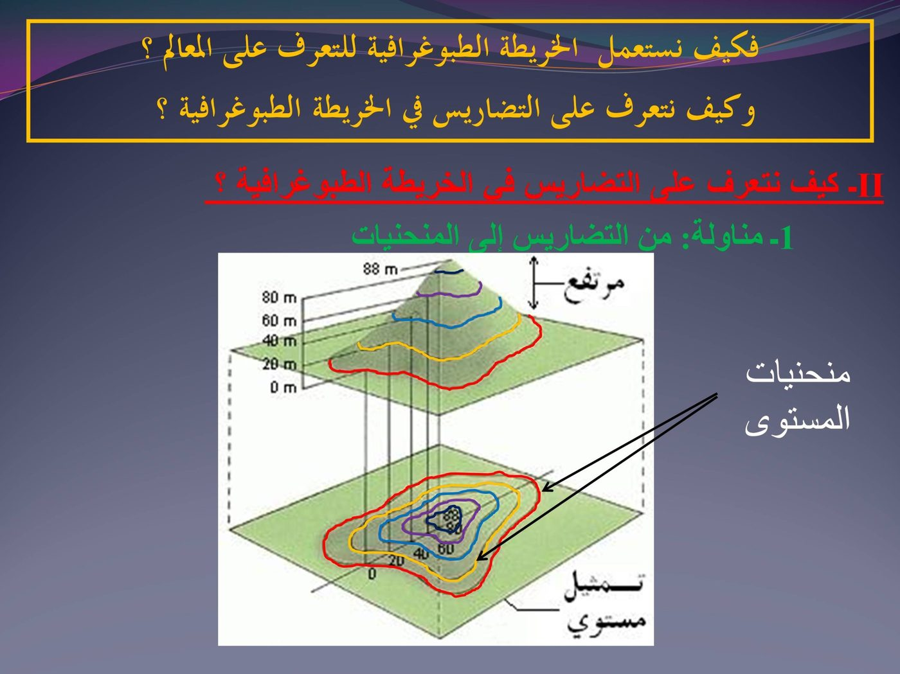
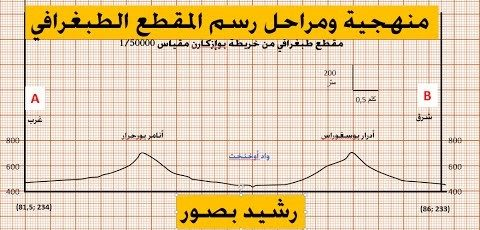
3) المقياس والتضخيم العمودي
- المقياس العددي: 1/n تعني أن 1 على الخريطة = n سم في الطبيعة (1/25000 = 250م لكل 1 سم).
- المقياس الخطي: شريط متدرج يقرأ المسافة مباشرة.
- التضخيم العمودي (Exagération verticale): مقياس الارتفاعات / مقياس المسافات — نكبّر الارتفاعات ×5 أو ×10 حتى نرى التضاريس على المقطع.
4) خطوات إنجاز المقطع الطبوغرافي A–B
- حدّد على الخريطة النقطتين A وB وارسم القطع المستقيم بينهما.
- ضع ورقة على القاطع وعلّم تقاطعات منحنيات الكنتور وارتفاعاتها.
- ارسم المحورين: الأفقي (مسافات حسب مقياس الخريطة) والعمودي (ارتفاعات حسب مقياس مضخّم).
- أسقط كل نقطة على ارتفاعها، ثم صِل النقاط بخط متعرج مُنساب — هذا هو المقطع.
- اُكتب: العنوان، الاتجاه، المقياسين، والتضخيم العمودي.